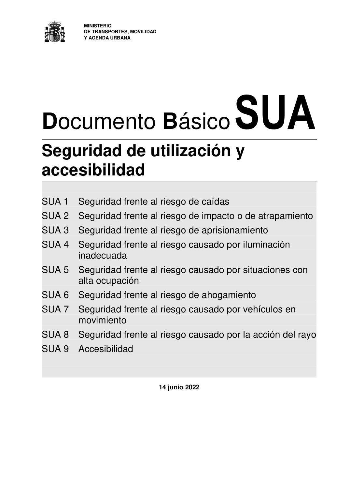

DB-SUA Seguridad de utilización y accesibilidad · edición 2022-06-14 · capa oficial
Documento DB-SUA-oficial · SHA-256 del PDF 3cfb5bbb135e8f02faebd8b844e03e8947994c18d4c9e675a7d2aa37d1cd5958
Página física 1 de 47.
Copia fiel del PDF fuente · Fuente oficial
Ficha de la disposición en la fuente oficial
Formato: Texto de la página (Markdown)
MINISTERIO DE TRANSPORTES, MOVILIDAD Y AGENDA URBANA Documento Básico SUA Seguridad de utilización y accesibilidad SUA 1 Seguridad frente al riesgo de caídas SUA 2 Seguridad frente al riesgo de impacto o de atrapamiento SUA 3 Seguridad frente al riesgo de aprisionamiento SUA 4 Seguridad frente al riesgo causado por iluminación inadecuada SUA 5 Seguridad frente al riesgo causado por situaciones con alta ocupación SUA 6 Seguridad frente al riesgo de ahogamiento SUA 7 Seguridad frente al riesgo causado por vehículos en movimiento SUA 8 Seguridad frente al riesgo causado por la acción del rayo SUA 9 Accesibilidad 14 junio 2022
